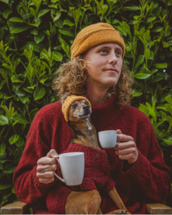
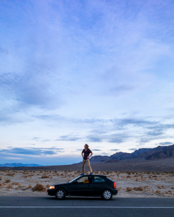
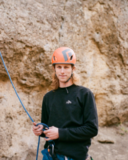

/ About
Seattle based designer with a knack for learning new skills. I love collaboration and I’m always curious.
Résumé →
  
Recently my passion for the circular economy and clothing repair lead me to Boulder, Colorado where I was on the leadership team at an experimental Pop-Up Patagonia store. We sold exclusively pre-owned clothing and repaired gear from any brand on the spot. Before that I was a designer at Industrial Alchemy in the Cascade Mountains. During my time there I both wielded a pattern knife as I cut and sewed prototypes, as well as crafted their digital presence through a new website!
I value collaboration across disciplines and I’m not afraid to ask questions. I’ll hone the radius down to the decimal in CAD and then wax philosophical on the empowerment found in the repair experience.
I graduated from University of Washington in 2019 where I got my B.A. in Industrial Design and launched my ongoing passion project, The RepairCycle with Coreen Callister.